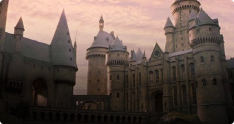
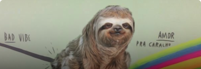

NOME DO QUIZZ, QUE SERA CLICADO
Em qual animal Olho-Tonto Moody transfigurou Malfoy?

Animal
Animal
Animal
Animal
88% de acerto: Você é praticamente um aluno de Hogwarts!

Parabéns Potterhead! Bem-vindx a Hogwarts, aproveite o loop infinito de comida e clique no botão abaixo para usar o vira-tempo e reiniciar este teste.
Voltar pra home